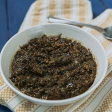

Pondu:

A Congolese dish made with cassava leaves
Description:
This dish is often served either with rice or with what is called a 'swallow' from my own experience,
a swallow is a food item which can be 'dipped' into the pondu and can be eaten with little to no chewing
due to its texture adn is eaten with your hands.
Ingredients:
- 500g frozen cassava leaves
- green onions
- 1 bulb of garlic
- 2 yellow onions
- 1 leek
- 2 green peppers
- 1 cup of palm oil
- 1 Tbsp of salt
- 1 smoked fish
Steps:
- Boil smoked fish in water for 20 minutes
- Once done, remove everything other than flesh and set aside
- blend onions, garlic, leek and peppers in a food processor
- Put cassava leaves and onion mixture into large pot with enough water to cover leaves, as well as on a high heat
- Add salt and palm oil
- Boil for 30 minutes
- Add smoked fish and boil for 1 hour
- Continue adding two cups of water each time water runs out during the hour
- Done!